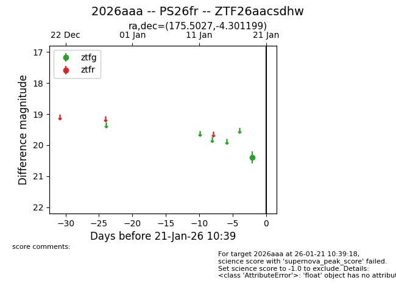
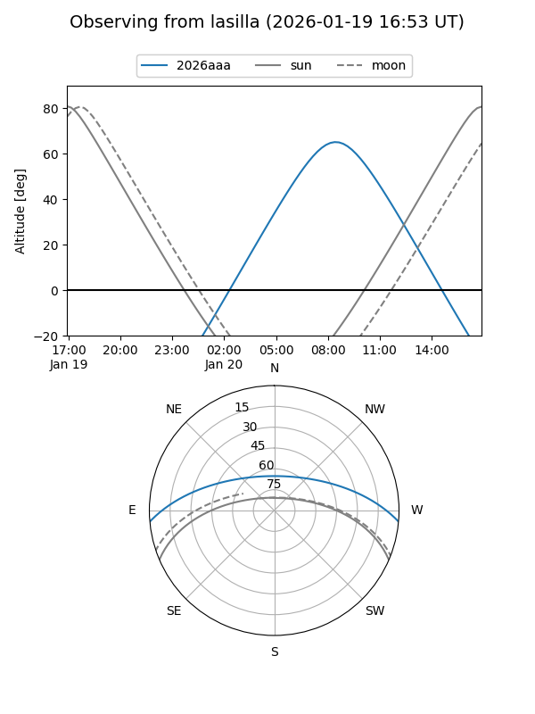
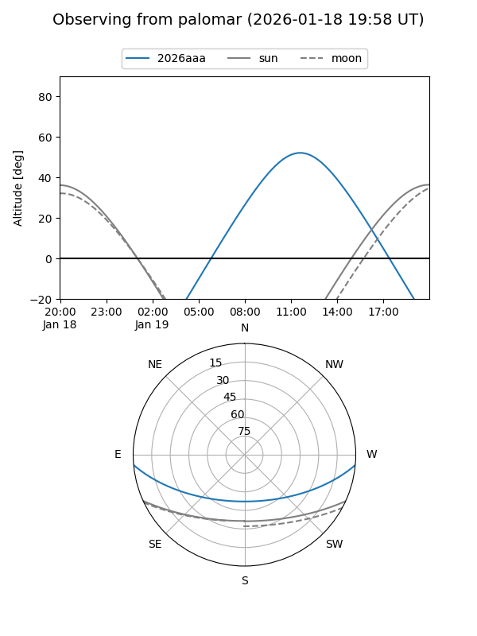

2026aaa
Target 2026aaa at 2026-01-19 10:36
Aliases and brokers:
FINK: link
Lasair: link
ALeRCE: link
TNS: link
YSE: link
alt names
ZTF26aacsdhw (ztf,fink_ztf)
2026aaa (tns,yse)
PS26fr (panstarrs)
Coordinates:
equatorial (ra, dec) = 175.5027,-4.30120
equatorial (HMS+DMS) = 11:42:00.65,-04:18:04.32
galactic (l, b) = (272.2184,+54.37750)
Flags:
Photometry:
last ztfg=20.39
1 ztfg detections
Lightcurve

Visibility


Additional plots